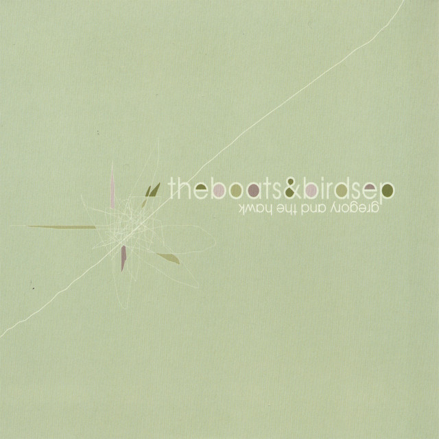
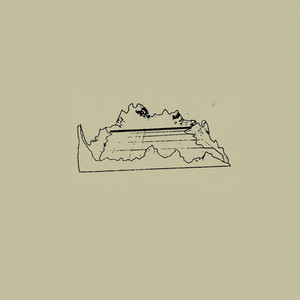
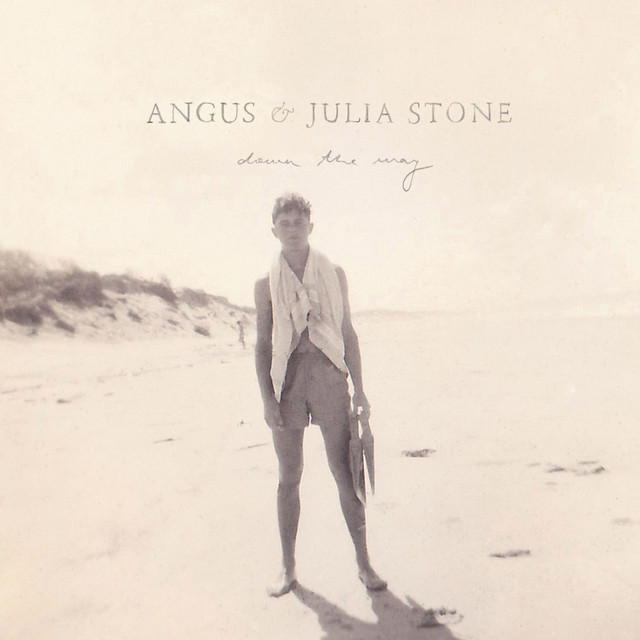
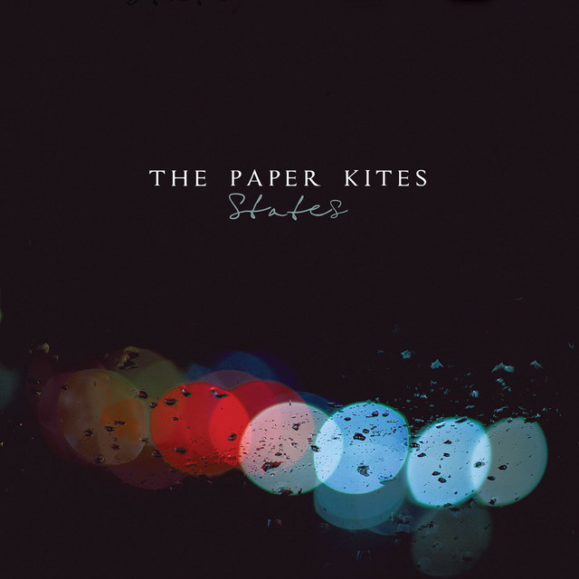
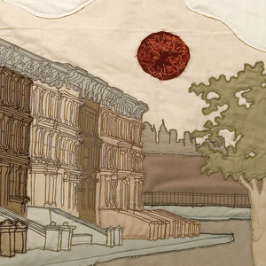
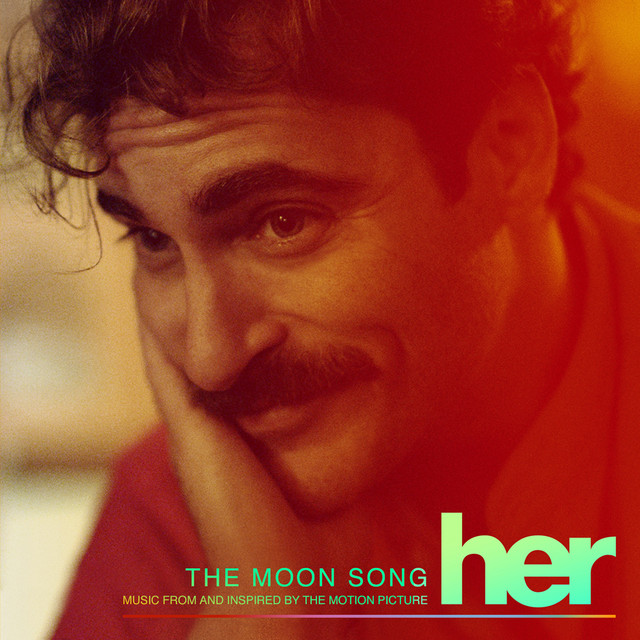
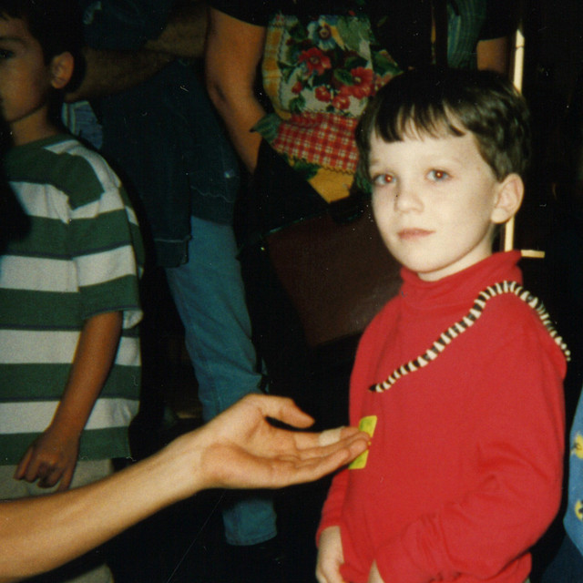
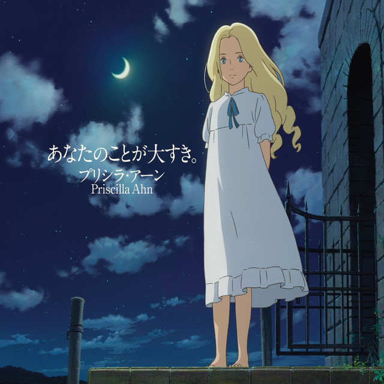

The Only Thing - Sufjan Stevens 
Poetically depressing lyrics, covered by an absolutely beatiful melody.
Boats and Birds - Gregory and the Hawk 
The sacrfices you do for one sided love.
Big Black Car - Gregory Alan Isakov 
The kind of song I'd play on a cold night underneath a blanket of stars and the light of a full moon.
Heartbeats - Jose Gonzalez 
Reminds me of the time when my room was simple, with a single orange lamp, a mat, piles of books on the floor and a bed.
Santa Monica Dream - Angus & Julia Stone 
The first song I felt some sort of longing of which I didn't have.
Tenebaum - The Paper Kites 
Longing that isn't mine.
Lua - Bright Eyes 
A sad song, which makes me feel nice.
The Moon Song - Karen O 
A really sweet song from the movie, Her.
Carry You - Novo Amor 
A song I seek when I need to feel support.
I Am Not Alone - Priscilla Ahn 
A song from the Ghibli Film, When Marnie was there. Great movie, loved it, it was sweet.